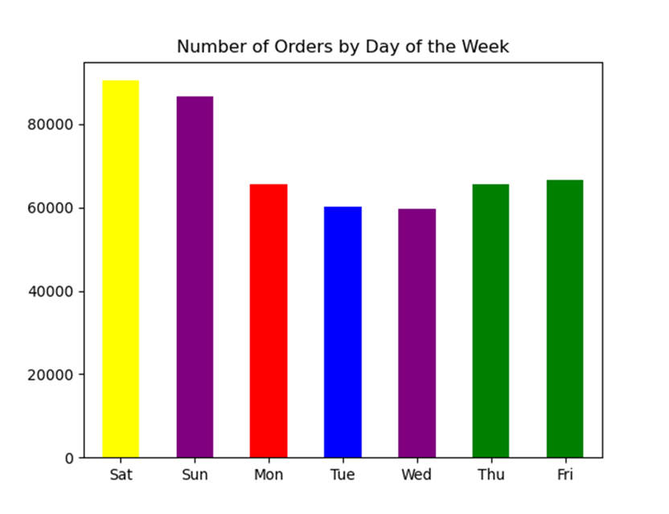
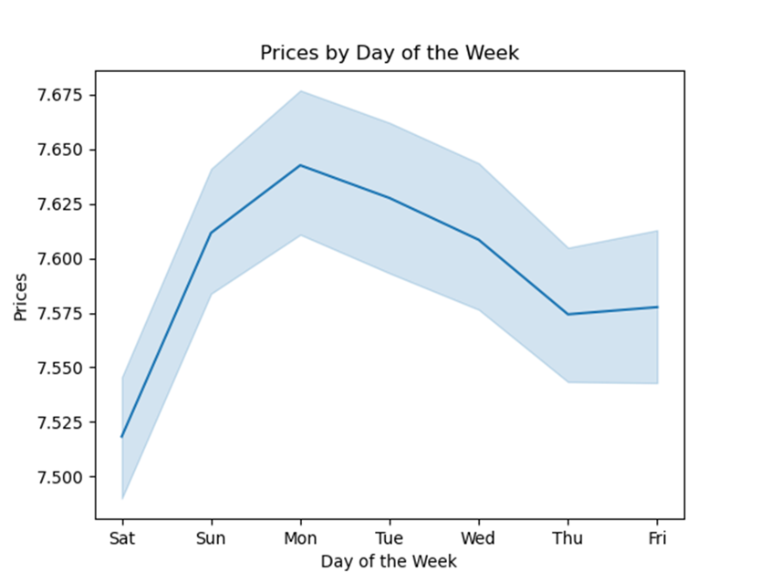
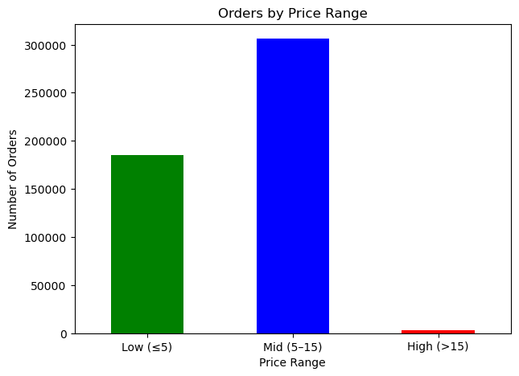
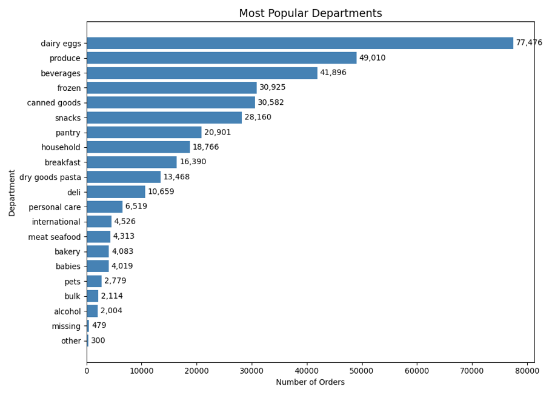
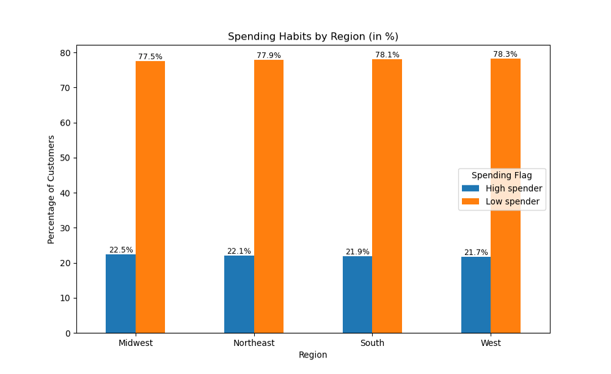
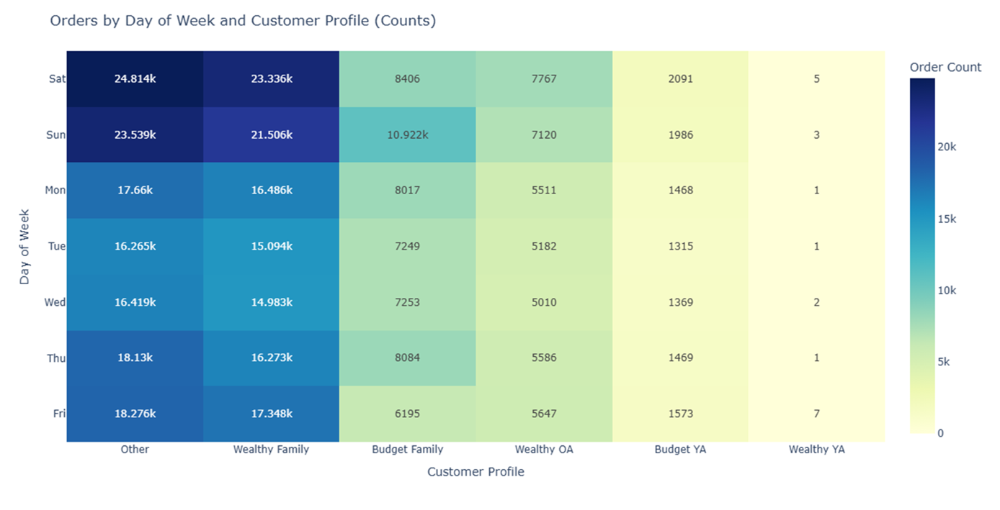

Rockbuster Stealth LLC
Analyzed company data using SQL to provide insights for management on how to transition from physical rentals to an online streaming service.
Project Overview
Rockbuster Stealth LLC is a global movie rental company that previously operated physical stores worldwide. With the rise of streaming platforms like Netflix and Amazon Prime, the company faced increasing competition. To remain competitive, Rockbuster plans to use its existing movie licenses and launch a new online video rental service. This data analysis aims to provide insights into customer behavior to help management develop an effective strategy for the upcoming launch.
Key Questions
- Which movies contributed the most/least to revenue gain??
- What was the average rental duration for all videos?
- Which countries are Rockbustercustomers based in?
- Where are customers with a high lifetime value based?
- Do sales figures vary between geographic regions?
Data & Tools
The Rockbuster dataset is a relational SQL database containing tables on film inventory, customers, payments, staff, stores, and rental history. I used the following tools for analysis and insights:
- PostgreSQL – querying, joins, CTEs, aggregations
- pgAdmin 4 – database management and data exploration
- Tableau Public – visualization and insights presentation
Methodology
- Reviewed database schema and identified primary/foreign key relationships.
- Cleaned and standardized inconsistent values to ensure data accuracy.
- Merged tables into a single analysis-ready dataframe.
- Joined tables and filtered relevant fields for analysis.
- Performed aggregations to examine customer behavior, rental trends, and film performance.
- Visualized results using Tableau dashboards to support strategic decision-making for a streaming transition.
Key Insights
- Most orders are placed in the late afternoon and early evening, especially on weekends.  
- Mid-range products (€5–15) represent the majority of sales, indicating that customers primarily favor moderately priced items. 
- The most popular department is Dairy & Eggs, followed by Produce, Beverages, Frozen, and Canned Goods. 
- In all four regions (Midwest, Northeast, South, and West), low spenders dominate. High spenders represent about 21–22%, with very small variation between regions. 
- For all customer profiles, the main shopping days are Saturday and Sunday, except for Young Adults, whose peak days are Friday and Sunday. 
Recommendations
- Focus on Sports, Sci-Fi and Animation films to boost engagement and rentals.
- Implement marketing strategies targeted at India, China, the US, Japan, and Mexico.
- Introduce loyalty programs or personalized offers to retain high-value customers in Mexico, Turkey, the US, and India.